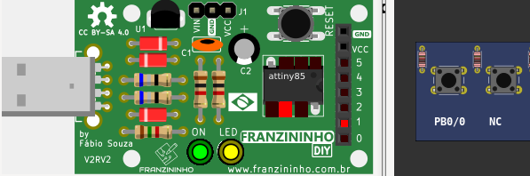

Franzininho DIY - AVR LibC: Instrumento musical com Buzzer
Exemplos AVR Libc – Franzininho DIY do site Embarcados
Link para o artigo e código: Instrumento musical com Buzzer

Online (wasm mt)
Online (asm.js)
[board_Franzininho/attiny85/Buzzer] Franzininho DIY - AVR LibC: Instrumento musical com BuzzerExemplos AVR Libc – Franzininho DIY do site Embarcados Link para o artigo e código: Instrumento musical com Buzzer | |||
|
Download (pzw) |
Online (wasm) Online (wasm mt) Online (asm.js) | |
[board_Franzininho/attiny85/Contador_v3] Franzininho DIY - Contador de pulsos externosExemplos AVR Libc – Franzininho DIY do site Embarcados Link para o artigo e código: Contador de pulsos externos | |||
 |
Download (pzw) |
Online (wasm) Online (wasm mt) Online (asm.js) | |
[board_Franzininho/attiny85/EntradaDigital] Franzininho DIY - AVR LibC: Entrada DigitalExemplos AVR Libc – Franzininho DIY do site Embarcados Link para o artigo e código: Entrada Digital | |||
|  | Download (pzw) |
Online (wasm) Online (wasm mt) Online (asm.js) | |
[board_Franzininho/attiny85/HelloWorld] Franzininho DIY - AVR LibC: Hello, World! Linguagem CExemplos AVR Libc – Franzininho DIY do site Embarcados Link para o artigo e código: Hello, World! Linguagem C | |||
 |
Download (pzw) |
Online (wasm) Online (wasm mt) Online (asm.js) | |
[board_Franzininho/attiny85/SaidaDigital] Franzininho DIY - AVR LibC: Saídas DigitaisExemplos AVR Libc – Franzininho DIY do site Embarcados Link para o artigo e código: Saídas Digitais | |||
 |
Download (pzw) |
Online (wasm) Online (wasm mt) Online (asm.js) | |